A little of my world / Photography
Through my
lens.
Some scenes make me stop and look twice. These photographs are a few of those moments, from the ground and from above.
Selected photographs · 15
Click to center · Right-drag to browse · Click the centered photo to enlargeSwipe · Tap to view

Dali in the last light
Aerial
Low sunlight catches the roofs on the left. The red pavilion stands out among the darker tiles.

Above the cliff
Architecture
The rock face takes up most of the picture. A golden roof and a few red flags sit at the top.

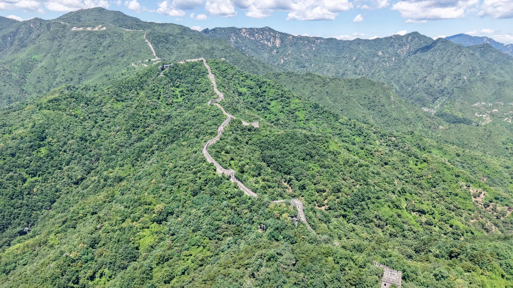
The wall along the ridge
Aerial
The wall bends with the ridge. From up here, it looks like a thin line across the green hills.

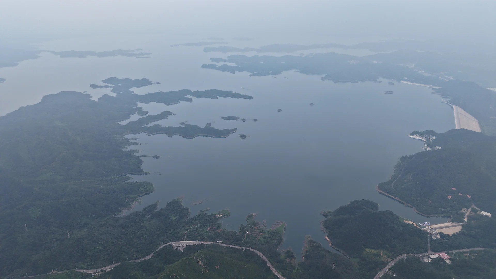
Water under a veil of mist
Aerial
The nearest shore is dark and clear. Farther out, the islands start to disappear into the haze.

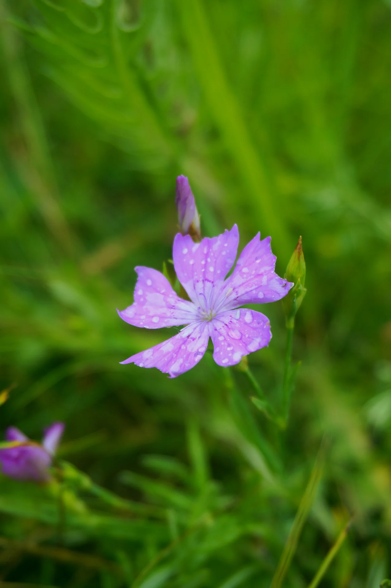
A small bloom
Details
The little purple flower is the clearest thing in the picture. You can see the lines on its petals.

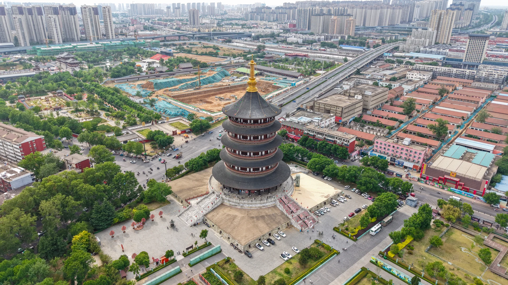
A pagoda over Luoyang
Aerial
The round tower stands out among straight roads and rows of buildings. Its roofs get smaller toward the top.

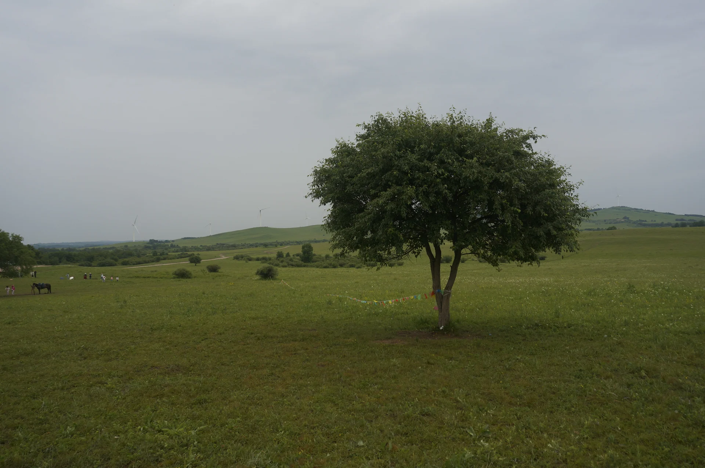
One tree in the grassland
Landscape
A single tree stands in the grass. Low hills and a gray sky leave plenty of space around it.

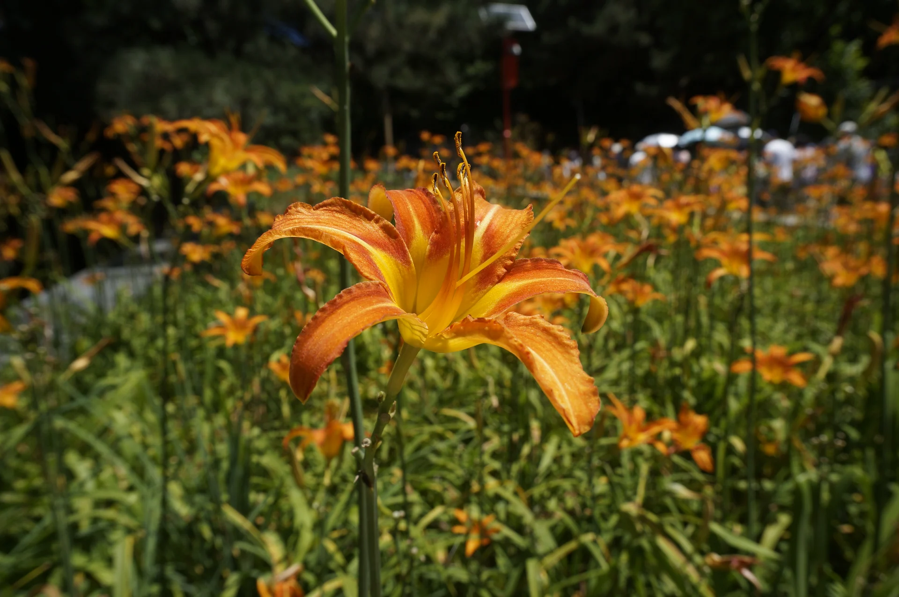
Orange in the shade
Details
One orange flower catches the light. There are more orange blooms behind it, tucked into the shade.

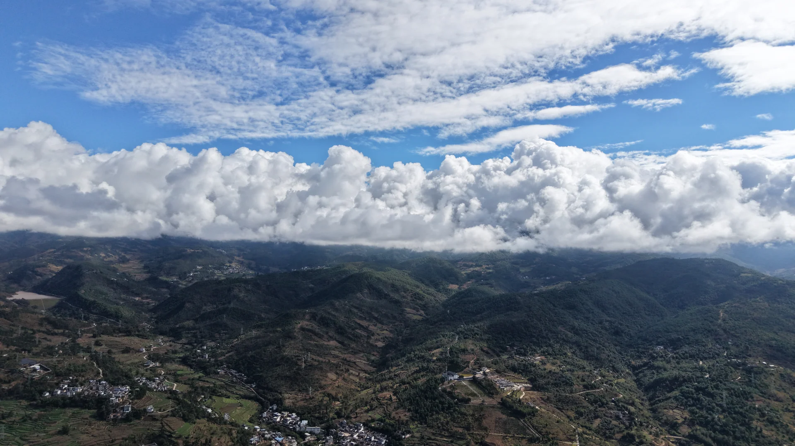
Clouds over Dali
Aerial
A bank of white clouds sits above the dark hills. Between the cloud layers, a strip of blue sky shows through.

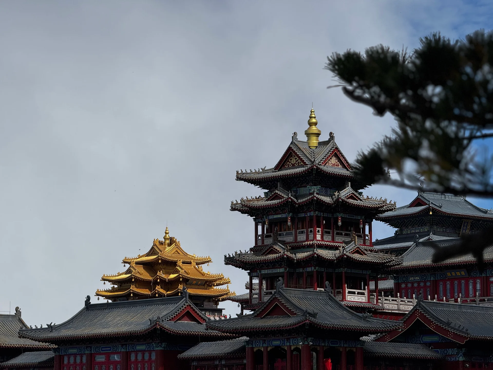
Layers of rooflines
Architecture
The dark roof edges overlap. A smaller roof with gold tiles peeks out behind them.

Wishes in red
Details
Red tags and ribbons fill the bottom of the picture. Beyond them, the rocks and clouds blur together.

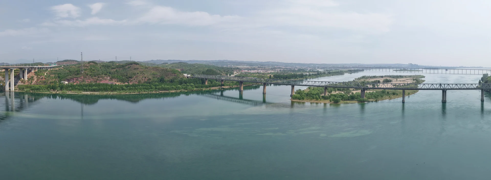
A quiet crossing
Aerial
The bridge runs nearly straight across the picture. There is a wide stretch of still water beneath it.

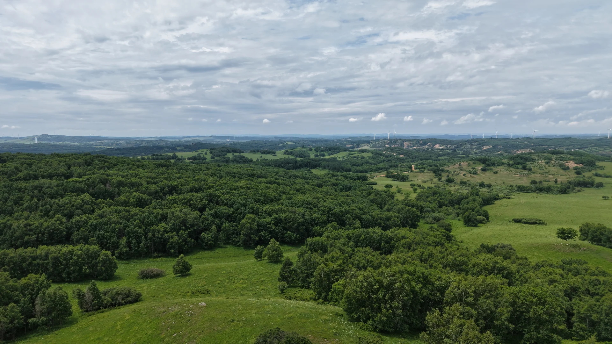
Where the fields meet the woods
Aerial
From above, the open grass and dense trees are easy to tell apart. Their edges curve around each other.

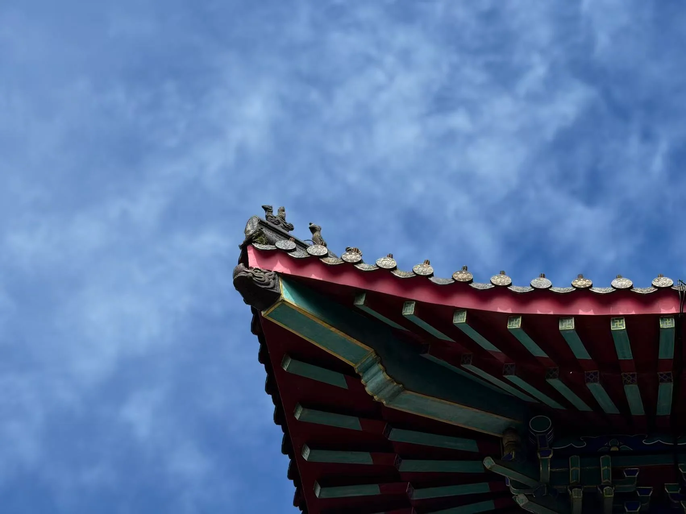
An eave against the sky
Details
There are small figures at the end of the roof. Underneath, you can see the red and green beams.

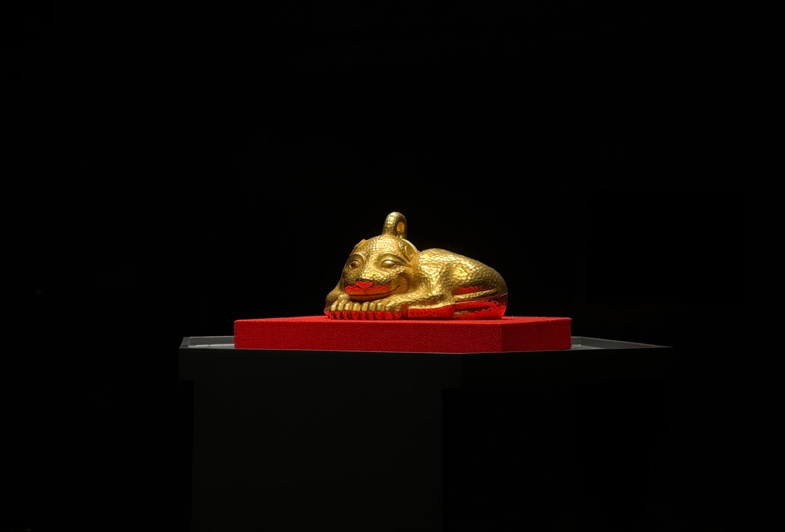
Gold in the dark
Details
Light falls on the small gold figure and the red base. The rest of the frame stays dark.
Use the left and right arrow keys to browse. Home goes to the first photograph; End goes to the last. Select a photograph to see the complete image.
0115
Look up.
Look closer.
A change in height can make a familiar place feel new. Up close, I like seeing where light, color, and texture meet.
Browse my travel journal